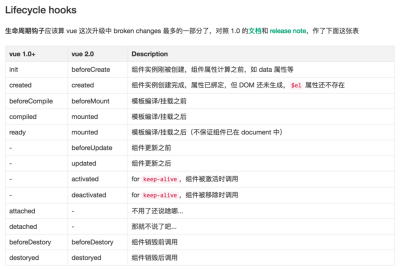

Vue

MVVM
MVVM 是 Model-View-ViewModel 的简写。它本质上就是 MVC 的改进版。很早的时候微软就有了 Silverlight ，MVVM 就是将其中的 View 的状态和行为抽象化，让我们将视图 UI 和业务逻辑分开,它是将“数据模型数据双向绑定”的思想作为核心，因此在 View 和 Model 之间没有联系，通过 ViewModel 进行交互，而且 Model 和 ViewModel 之间的交互是双向的，因此视图的数据的变化会同时修改数据源，而数据源数据的变化也会立即反应到 View 上。
典型的应用有.NET 的 WPF，js 框架 VUE ,AngularJS, Knockout 等。
MVVM 的出现，完美解决以下三个问题
- 开发者在代码中大量调用相同的 DOM API, 处理繁琐 ，操作冗余，使得代码难以维护。
- 大量的 DOM 操作使页面渲染性能降低，加载速度变慢，影响用户体验。
- 当 Model 频繁发生变化，开发者需要主动更新到 View ；当用户的操作导致 Model 发生变化，开发者同样需要将变化的数据同步到 Model 中，这样的工作不仅繁琐，而且很难维护复杂多变的数据状态。
前端为什么要工程化
相对 HTML4 , HTML5 最大的亮点是它为移动设备提供了一些非常有用的功能，使得 HTML5 具备了开发 App 的能力, HTML5 开发 App 最大的好处就是跨平台、快速迭代和上线，节省人力成本和提高效率，因此很多企业开始对传统的 App 进行改造，逐渐用 H5 代替 Native，到 2015 年的时候，市面上大多数 App 或多或少嵌入都了 H5 的页面,既然要用 H5 来构建 App, 那 View 层所做的事，就不仅仅是简单的数据展示了，它不仅要管理复杂的数据状态，还要处理移动设备上各种操作行为等等。因此，前端也需要工程化，也需要一个类似于 MVC 的框架来管理这些复杂的逻辑，使开发更加高效
VUE
Vue 是采用 Object.defineProperty 的 getter 和 setter，并结合观察者模式来实现数据绑定的
Object.defineProperty() 方法会直接在一个对象上定义一个新属性，或者修改一个对象的现有属性， 并返回这个对象。
因此导致了 VUE 不支持 IE9 一下浏览器如果想要向下兼容，则需要使用 VBbScript 或者 defineGetter, defineSetter,
双向数据绑定
把一个普通 Javascript 对象传给 Vue 实例来作为它的 data 选项时，Vue 将遍历它的属性，用 Object.defineProperty 将它们转为 getter/setter。用户看不到 getter/setter，但是在内部它们让 Vue 追踪依赖，在属性被访问和修改时通知变化。

setter 触发消息到 Watcher watcher 帮忙告诉 Directive 更新 DOM DOM 修改数据也会通知 Watcher，watcher 帮忙修改数据
双向数据绑定原理
- Observer 数据监听器，能够对数据对象的所有属性进行监听，如有变动可拿到最新值并通知订阅者，内部采用 Object.defineProperty 的 getter 和 setter 来实现。
- Compile 指令解析器，它的作用对每个元素节点的指令进行扫描和解析，根据指令模板替换数据，以及绑定相应的更新函数。
- Watcher 订阅者， 作为连接 Observer 和 Compile 的桥梁，能够订阅并收到每个属性变动的通知，执行指令绑定的相应回调函数。
- Dep 消息订阅器，内部维护了一个数组，用来收集订阅者（Watcher），数据变动触发 notify 函数，再调用订阅者的 update 方法。
从图中可以看出，当执行 new Vue() 时，Vue 就进入了初始化阶段，一方面 Vue 会遍历 data 选项中的属性，并用 Object.defineProperty 将它们转为 getter/setter，实现数据变化监听功能；另一方面，Vue 的指令编译器 Compile 对元素节点的指令进行扫描和解析，初始化视图，并订阅 Watcher 来更新视图， 此时 Wather 会将自己添加到消息订阅器中(Dep),初始化完毕 当数据发生变化时，Observer 中的 setter 方法被触发，setter 会立即调用 Dep.notify()，Dep 开始遍历所有的订阅者，并调用订阅者的 update 方法，订阅者收到通知后对视图进行相应的更新。
代码
--------------html---------------------
1.全局创建一个vue实例
<div id="app">
<input type="text" id="a" v-model="text">
{ {text} }
</div>
<script>
var vm = new Vue({
el: 'app',
data: {
text: 'hello world'
}
});
</script>
----------------MVVM------------------------
2.创建VUE 类
function Vue(options) {
// 2.实例挂载属性 data: {text:'hello'}
this.data = options.data;
var data = this.data;
// 3.observe 遍历了data对象，进行拆分
observe(data, this);
var id = options.el;
//7.Compile(app节点,vue的实例对象)将app节点内容转换成文档片段，拿回html，编译指令，插回到dom,并创建一个watcher
var dom =new Compile(document.getElementById(id),this);
// 编译完成后，将dom替换到html模板
document.getElementById(id).appendChild(dom);
}
-----------------Observe--------------------
/**
* obj: {text:'hello'}
* vm: vue实例
*/
function observe(obj, vm) {
//遍历
Object.keys(obj).forEach(function(key) {
//拆分
defineReactive(vm, key, obj[key]);
})
}
4.Object.defineProperty将data数据里的属性分别进行 set和get
/**
* obj: vue实例
* key: text
* val: 'hello'
*/
function defineReactive(vm, key, val) {
var dep = new Dep();
Object.defineProperty(vm, key, {
get: function() {
//5.addSub添加观察者watcher到主题对象Dep
if (Dep.target) {
//JS的浏览器单线程特性，保证这个全局变量在同一时间内，只会有同一个监听器使用
dep.addSub(Dep.target);
}
return val;
},
// 5.notify
set: function(newVal) {
//如果set的值与原来的值相同则返回
if (newVal === val) return;
//不同则由dep来notify发通知给watcher
val = newVal;
console.log(val);
5.作为发布者发出通知
dep.notify();
}
})
}
-------------------Dep----------------------
5.Dep 就是发布者，subs就是收集来的订阅者（就是一个个watcher），很好的实现了观察者模式
function Dep() {
this.subs = [];
}
Dep.prototype = {
addSub: function(sub) {
this.subs.push(sub);
},
notify: function() {
this.subs.forEach(function(sub) {
sub.update();
})
}
}
--------------------Compile----------------------
6.Compile(app节点,vue的实例对象)将app节点内容转换成文档片段，拿回html，编译指令，插回到dom,并创建一个watcher
//此处代码比较多，简写一下
function Compile(node, vm) {
if (node) {
this.$frag = this.nodeToFragment(node, vm);
return this.$frag;
}
}
Compile.prototype = {
nodeToFragment: function(node, vm) {
var self = this;
//创建DOM片段
var frag = document.createDocumentFragment();
var child;
while (child = node.firstChild) {
self.compileElement(child, vm);
// 将所有子节点添加到fragment中
frag.append(child);
}
return frag;
},
compileElement: function(node, vm) {
var reg = /\{\{(.*)\}\}/;
//节点类型为元素
if (node.nodeType === 1) {
var attr = node.attributes;
// 解析属性
for (var i = 0; i < attr.length; i++) {
if (attr[i].nodeName == 'v-model') {
// 获取v-model绑定的属性名
var name = attr[i].nodeValue;
node.addEventListener('input', function(e) {
// 给相应的data属性赋值，进而触发该属性的set方法
vm[name] = e.target.value;
});
// 将data的值赋给该node
// node.value = vm[name];
new Watcher(vm, node, name, 'value');
}
};
}
//节点类型为文本节点或span
if (node.nodeType === 3) {
if (reg.test(node.nodeValue)) {
// 获取匹配到的字符串
var name = RegExp.$1;
name = name.trim();
// 将data的值赋给该node
// node.nodeValue = vm[name];
new Watcher(vm, node, name, 'nodeValue');
}
}
},
}
----------------Watcher--------------------
//7.监听更新
function Watcher(vm, node, name, type) {
Dep.target = this;
this.name = name;
this.node = node;
this.vm = vm;
this.type = type;
this.update();
Dep.target = null;
}
Watcher.prototype = {
update: function() {
this.get();
//9.批量更新
var batcher = new Batcher();
batcher.push(this);
// 订阅者执行相应操作
// this.node[this.type] = this.value;
// this.cb();
},
cb:function(){
// 订阅者执行相应操作
this.node[this.type] = this.value;
},
// 获取data的属性值
get: function() {
//触发相应属性的get
this.value = this.vm[this.name];
}
}
- 初始化：new vue ->
- observe.get- dep 存储一个监听数组
- Compile-Watcher.update 更新数据
- 更新：observe -dep - watcher.update 更新数组
VUE 生命周期

VUE 3.0
vm.data="2333" 无效 vm.$set(this.$data,) 要走监听麻烦
VUE3.0 会去掉 DEP，Watcher，Observer 这一坨东西，为什么这么说呢，VUE3.0 将利用 ES6 的 proxy 代理和 Reflect 反射来实现双向绑定，监听，那么流程图就应该是这样了
Proxy 可以理解成，在目标对象之前架设一层“拦截”，外界对该对象的访问，都必须先通过这层拦截，因此提供了一种机制，可以对外界的访问进行过滤和改写。Proxy 这个词的原意是代理，用在这里表示由它来“代理”某些操作，可以译为“代理器”。
Reflect 对象与 Proxy 对象一样，也是 ES6 为了操作对象而提供的新 API。Reflect 对象的设计目的有这样几个。
- 将 Object 对象的一些明显属于语言内部的方法（比如 Object.defineProperty），放到 Reflect 对象上。现阶段，某些方法同时在 Object 和 Reflect 对象上部署，未来的新方法将只部署在 Reflect 对象上。
- 修改某些 Object 方法的返回结果，让其变得更合理。比如，Object.defineProperty(obj, name, desc)在无法定义属性时，会抛出一个错误，而 Reflect.defineProperty(obj, name, desc)则会返回 false。
Virtual DOM
JavaScript 对象表示的树结构来构建一个真正的 DOM 。当状态变更时，重新渲染这个 JavaScript 的对象结构，实现视图的变更，结构根据变更的地方重新渲染。
DOM 很慢，为啥说它慢，先看一下 Webkit 引擎，所有浏览器都遵循类似的工作流，只是在细节处理有些不同。一旦浏览器接收到一个 HTML 文件，渲染引擎 Render Engine 就开始解析它，根据 HTML 元素 Elements 对应地生成 DOM 节点 Nodes，最终组成一棵 DOM 树。
这仅仅是第一层。真正的 DOM 元素非常庞大，这是因为标准就是这么设计的。而且操作它们的时候你要小心翼翼，轻微的触碰可能就会导致页面重排，这可是杀死性能的罪魁祸首。
构造了渲染树以后，浏览器引擎开始着手布局 Layout。布局时，渲染树上的每个节点根据其在屏幕上应该出现的精确位置，分配一组屏幕坐标值。接着，浏览器将会通过遍历渲染树，调用每个节点的 Paint 方法来绘制这些 Render 对象。Paint 方法根据浏览器平台，使用不同的 UI 后端 API（Agnostic UI Backend API）通过绘制，最终将在屏幕上展示内容。只要在这过程中进行一次 DOM 更新，整个渲染流程都会重做一遍。
Virtual DOM 树的差异介绍（Diff 算法）
比较两个 DOM 树的差异是 Virtual DOM 算法最核心的部分，这也是所谓的 Virtual DOM 的 diff 算法。在前端当中，很少会跨越层级地移动 DOM 元素。所以 Virtual DOM 只会对同一个层级的元素进行对比，下面的 div 只会和同一层级的 div 对比，第二层级的只会跟第二层级对比。采用的是深度优先遍历，来记录差异，这样每个节点都会有一个唯一的标记。
节点的差异指的是什么呢？对 DOM 操作可能会：
- 替换掉原来的节点，例如把上面的 div 换成了 section
- 移动、删除、新增子节点，例如上面 div 的子节点，把 p 和 ul 顺序互换
- 修改了节点的属性
- 对于文本节点，文本内容可能会改变如修改上面的文本节点 2 内容为 Virtual DOM。
运行流程
单向数据流

- state，驱动应用的数据源；
- view，以声明方式将 state 映射到视图；
- actions，响应在 view 上的用户输入导致的状态变化。
但是，当我们的应用遇到多个组件共享状态时，单向数据流的简洁性很容易被破坏：
- 多个视图依赖于同一状态。
- 来自不同视图的行为需要变更同一状态。
vuex
Vuex 是一个专为 Vue.js 应用程序开发的状态管理模式。它采用集中式存储管理应用的所有组件的状态，并以相应的规则保证状态以一种可预测的方式发生变化

- State: 单一状态树用一个对象就包含了全部的应用层级状态。至此它便作为一个“唯一数据源 (SSOT)”而存在。这也意味着，每个应用将仅仅包含一个 store 实例。单一状态树让我们能够直接地定位任一特定的状态片段，在调试的过程中也能轻易地取得整个当前应用状态的快照
- Getters 有时候我们需要从 store 中的 state 中派生出一些状态，例如对列表进行过滤并计数
- Mutations 更改 Vuex 的 store 中的状态的唯一方法是提交 mutation。Vuex 中的 mutation 非常类似于事件：每个 mutation 都有一个字符串的 事件类型 (type) 和 一个 回调函数 (handler)。
- Action 函数接受一个与 store 实例具有相同方法和属性的 context 对象，因此你可以调用 context.commit 提交一个 mutation，或者通过 context.state 和 context.getters 来获取 state 和 getters
- Modules Vuex 允许我们将 store 分割成模块（module）。每个模块拥有自己的 state、mutation、action、getter、甚至是嵌套子模块——从上至下进行同样方式的分割：